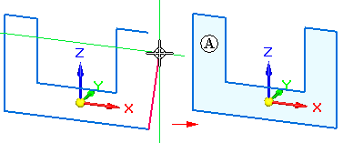

sketch region
A series of sketch elements or sketch elements and model edges that close on themselves. In a synchronous part or sheet metal document, sketch regions are displayed as shaded areas (A) by default. You can use a sketch region as a selection handle to construct features using the Select tool.
